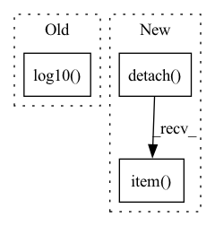

Pattern ID :24252

Before Change
flux[0] if self[f"I0_{r}"].value is None else self[f"I0_{r}"].value.detach().item(),
]
res = minimize(lambda x: np.mean((np.log10(flux) - np.log10(sersic_np(R, x[0], x[1], x[2])))**2), x0 = x0, method = "SLSQP", bounds = ((0.5,6), (R[1]*1e-3, None), (flux[0]*1e-3, None))) //, method = "Nelder-Mead"
plt.scatter(R, np.log10(flux))
plt.plot(R, np.log10(sersic_np(R, res.x[0], res.x[1], res.x[2])), color = "r", label = "fit")
plt.plot(R, np.log10(sersic_np(R, x0[0], x0[1], x0[2])), color = "orange", label = "init")
plt.legend()
After Change
res = minimize(lambda x: np.mean((np.log10(flux) - np.log10(sersic_np(R, x[0], x[1], x[2])))**2), x0 = x0, method = "SLSQP", bounds = ((0.5,6), (R[1]*1e-3, None), (flux[0]*1e-3, None))) //, method = "Nelder-Mead"
self[f"n_{r}"].set_value(res.x[0], override_locked = (self[f"n_{r}"].value is None))
self[f"Rs_{r}"].set_value(res.x[1], override_locked = (self[f"Rs_{r}"].value is None))
self[f"flux_{r}"].set_value(np.log10(sersic_I0_to_flux_np(res.x[2], self[f"n_{r}"].value.detach().item(), self[f"Rs_{r}"].value.detach().item(), self["q"].value.detach().item())), override_locked = (self[f"flux_{r}"].value is None))
if self[f"Rs_{r}"].uncertainty is None:
self[f"Rs_{r}"].set_uncertainty(0.02 * self[f"Rs_{r}"].value.detach().item(), override_locked = True)
if self[f"flux_{r}"].uncertainty is None:
In pattern: SUPERPATTERN
Frequency: 3
Non-data size: 3
Instances
Fragment ID: 75311345
Project Name: connorstoneastro/autoprof
Commit Name: 1755fb6a4b8078b28b0821a93913880d039f7f2f
Time: 2022-10-31
Author: connorstone628@gmail.com
File Name: autoprof/models/sersic_model.py
M Class Name: Sersic_Ray
N Class Name: Sersic_Ray
M Method Name: initialize(1)
N Method Name: initialize(1)
M Parent Class: Ray_Galaxy
N Parent Class: Ray_Galaxy
M File Name: autoprof/models/sersic_model.py
N File Name: autoprof/models/sersic_model.py
M Start Line: 97
M End Line: 124
N Start Line: 133
N End Line: 148
'>
Before Change
// except Exception as e:
// print(e)
im = ax.imshow(
np.log10(image - sky_level),
**imshow_kwargs,
)
if showcbar:
After Change
for M in model.model_list:
if isinstance(M,models.Sky_Model):
try:
sky_level = (10**(M["sky"].value)*model.target.pixelscale**2).detach().cpu().item()
print("subtracting sky level: ", sky_level)
break
except Exception as e:
print(e)
'>
Fragment ID: 75311342
Project Name: connorstoneastro/autoprof
Commit Name: 53be3d025f16413cb88735d0e934f1282bd41a02
Time: 2022-12-12
Author: connorstone628@gmail.com
File Name: autoprof/plots/image.py
M Class Name: AnonimousClass
N Class Name: AnonimousClass
M Method Name: model_image(5)
N Method Name: model_image(5)
M Parent Class:
N Parent Class:
M File Name: autoprof/plots/image.py
N File Name: autoprof/plots/image.py
M Start Line: 47
M End Line: 68
N Start Line: 48
N End Line: 69
'>
Before Change
res = minimize(lambda x: np.mean((np.log10(flux) - np.log10(sersic_np(R, x[0], x[1], x[2])))**2), x0 = x0, method = "SLSQP", bounds = ((0.5,6), (R[1]*1e-3, None), (flux[0]*1e-3, None))) //, method = "Nelder-Mead"
plt.scatter(R, np.log10(flux))
plt.plot(R, np.log10(sersic_np(R, res.x[0], res.x[1], res.x[2])), color = "r", label = "fit")
plt.plot(R, np.log10(sersic_np(R, x0[0], x0[1], x0[2])), color = "orange", label = "init")
plt.legend()
plt.title(f"{res.success} n {res.x[0]:0.3f} Rs {res.x[1]:0.3e} I0 {res.x[2]:0.3e}")
plt.savefig(f"{self.name}_coma_test.jpg")
After Change
res = minimize(lambda x: np.mean((np.log10(flux) - np.log10(sersic_np(R, x[0], x[1], x[2])))**2), x0 = x0, method = "SLSQP", bounds = ((0.5,6), (R[1]*1e-3, None), (flux[0]*1e-3, None)))
self["n"].set_value(res.x[0], override_locked = (self["n"].value is None))
self["Rs"].set_value(res.x[1], override_locked = (self["Rs"].value is None))
self["flux"].set_value(np.log10(sersic_I0_to_flux_np(res.x[2], self["n"].value.detach().item(), self["Rs"].value.detach().item(), self["q"].value.detach().item())), override_locked = (self["flux"].value is None))
if self["Rs"].uncertainty is None:
self["Rs"].set_uncertainty(0.02 * self["Rs"].value.detach().item(), override_locked = True)
if self["flux"].uncertainty is None:
'>
Fragment ID: 75311347
Project Name: connorstoneastro/autoprof
Commit Name: 1755fb6a4b8078b28b0821a93913880d039f7f2f
Time: 2022-10-31
Author: connorstone628@gmail.com
File Name: autoprof/models/_shared_methods.py
M Class Name: AnonimousClass
N Class Name: AnonimousClass
M Method Name: sersic_initialize(1)
N Method Name: sersic_initialize(1)
M Parent Class:
N Parent Class:
M File Name: autoprof/models/_shared_methods.py
N File Name: autoprof/models/_shared_methods.py
M Start Line: 36
M End Line: 58
N Start Line: 39
N End Line: 54